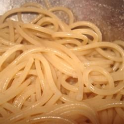

Pasta Recipe

Description
Prep:
5 mins
Cook:
10 mins
Total:
15 mins
Servings:
4
Yield:
4 servings
Ingredients
- 8 ounces dry pasta
- 3 tablespoons olive oil
Steps
- Step 1
Bring a large pot of lightly salted water to a boil. Add pasta and cook for 5 to 7 minutes or until still slightly less than al dente; drain. Rinse with cold water. Toss with olive oil. Cover and refrigerate until ready to use. To reheat, bring a large pot of water to a boil, add pasta and cook until hot, 1 to 2 minutes.